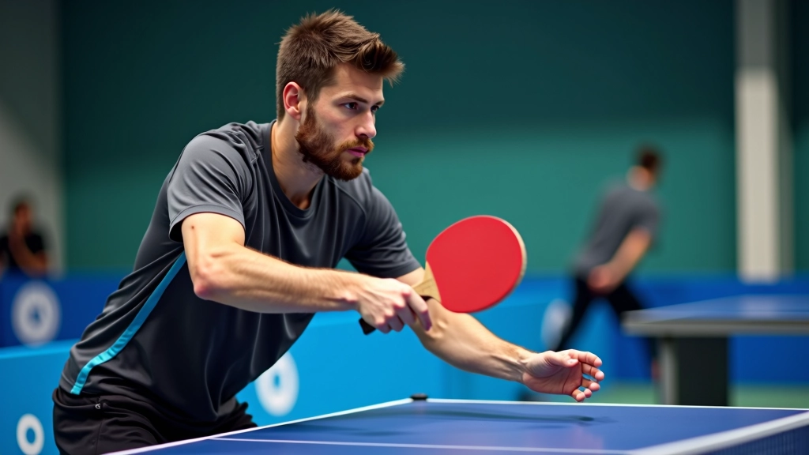
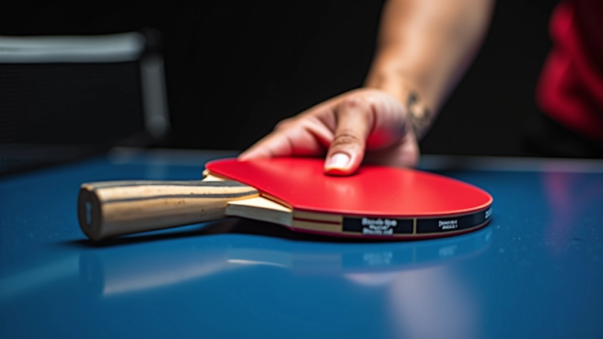
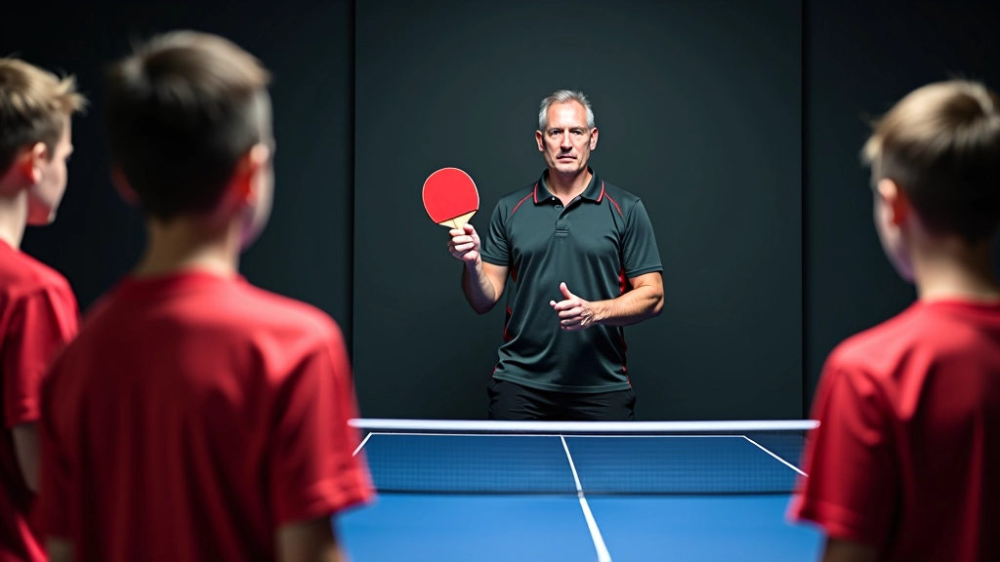

تطوير الضربات الأساسية والمتقدمة
خطوات تفصيلية لإتقان الضربة الأمامية والخلفية والدوران والقطع. يركز على الأخطاء الشائعة وكيفية تصحيحها.
اقرأ المزيدتعلم كيفية اتخاذ الموقف الصحيح وحمل المضرب بطريقة احترافية لتحسين أدائك وتجنب الإصابات
قد تبدو أساسيات الموقف والقبضة بسيطة في البداية، لكنها تشكل أساس كل حركة تقوم بها على طاولة تنس الطاولة. الموقف الخاطئ يؤدي إلى حركات غير فعالة وإرهاق سريع للعضلات وإصابات محتملة. من ناحية أخرى، الموقف الصحيح يسمح لك بالتحرك بسرعة وسهولة، وينقل القوة من ساقيك إلى ذراعك بكفاءة عالية.
القبضة الصحيحة على المضرب تؤثر بشكل مباشر على التحكم والقوة والدقة. عندما تمسك المضرب بالطريقة الصحيحة، ستشعر بالفرق فوراً — ستصبح حركاتك أكثر سلاسة وسيكون لديك تحكم أفضل بالكرة.

الموقف الصحيح يبدأ من القدمين. يجب أن تقف بمسافة عرض الكتفين بين قدميك تقريباً، مع توزيع وزنك بالتساوي على كلا القدمين. ركبتاك يجب أن تكونا منحنيتين قليلاً، وليس مستقيمتين تماماً — هذا يعطيك المرونة اللازمة للتحرك بسرعة في أي اتجاه.
وزنك يجب أن يكون على كرات القدمين وليس على الكعبين. هذا يسمح لك بالحركة السريعة والاستجابة الفورية للكرة. حاول المشي قليلاً بهذا الموقف — ستشعر أنك جاهز للانطلاق في أي لحظة.


هناك نمطان رئيسيان للقبضة في تنس الطاولة: القبضة الأوروبية والقبضة الآسيوية. معظم المبتدئين يبدأون بالقبضة الأوروبية لأنها أسهل وتعطي تحكماً جيداً على كلا الجانبين.
في القبضة الأوروبية، تمسك المضرب كما لو كنت تصافح شخصاً ما. إصبعك الإبهام والسبابة يشكلان حرفاً V، والمضرب يجلس بين هذا الحرف. أصابعك الأخرى تلتف حول المقبض بشكل طبيعي. تأكد من أن قبضتك ليست مشدودة جداً — يجب أن تكون مرتخية قليلاً لتسمح بحركة معصمك.
نصيحة مهمة: عندما تمسك المضرب بشكل صحيح، يجب أن تستطيع تحريك معصمك بحرية تامة. إذا كانت قبضتك مشدودة جداً، ستفقد المرونة والتحكم.
الوقوف بشكل مستقيم تماماً يقلل من قدرتك على الحركة السريعة. ستشعر أنك ثقيل وبطيء. انحن قليلاً من الخصر والركبتين.
إذا كانت قدماك قريبتين جداً، ستفقد التوازن والثبات. عرض الكتفين هو المسافة الصحيحة تقريباً.
مسك المضرب بقوة مفرطة يجعل حركاتك متصلبة وغير طبيعية. استرخِ وأمسك به بشكل طبيعي فقط.
عندما يكون وزنك على الكعبين، تصبح بطيء الحركة. انقل وزنك إلى كرات القدمين للاستعداد للحركة السريعة.
الآن بعد أن تعرفت على الموقف والقبضة الصحيحة، تحتاج إلى التدرب عليهما. ابدأ بتمارين بسيطة وكرر ما تتعلمه يومياً. خلال 3-4 أسابيع من التدريب المنتظم، ستصبح هذه الحركات طبيعية لك تماماً.
قف بالموقف الصحيح أمام المرآة لمدة 2-3 دقائق. راقب نفسك وتأكد من أن كل شيء في مكانه الصحيح.
تحرك جانباً يميناً وشمالاً مع الحفاظ على الموقف الصحيح. لا تخطِ بقدميك، بل انزلق برفق على كرات قدميك.
أمسك المضرب بالقبضة الصحيحة وحرك معصمك للأمام والخلف ببطء. تأكد من أن معصمك مرن وليس مشدوداً.

بالإضافة إلى الموقف والقبضة، هناك بعض النصائح التي ستساعدك على التقدم بسرعة:
مدرب جيد سيصحح أخطاءك من البداية. الأخطاء في الموقف والقبضة يصعب تصحيحها لاحقاً إذا لم يتم معالجتها مبكراً.
استخدم هاتفك لتسجيل نفسك وأنت تتدرب. مشاهدة نفسك تساعدك على رؤية الأخطاء بوضوح وتصحيحها.
لا تحتاج إلى ساعات طويلة. 15-20 دقيقة يومياً من التدريب المركز أفضل من ساعة واحدة كل أسبوع.
التدريب مع أشخاص آخرين يجعله أكثر متعة ويدفعك للتحسن بشكل أسرع.
الموقف والقبضة الصحيحة هما أساس كل لاعب تنس طاولة ناجح. قد لا تبدو مثيرة للاهتمام، لكنها تؤثر على كل شيء تفعله على الطاولة. استثمر الوقت في إتقانهما من البداية، وستشعر بالفرق فوراً في أدائك.
تذكر: الموقف الصحيح يعني قدمان متباعدتان بعرض الكتفين، ركبتان منحنيتان، وجسم منحنٍ قليلاً. والقبضة الصحيحة تعني إمساك المضرب بشكل طبيعي وليس مشدوداً جداً. كرر هذه التمارين يومياً، واطلب من مدربك أن يراقبك ويصحح أي أخطاء. ستصبح هذه الأساسيات جزءاً طبيعياً من حركاتك قريباً جداً.
هل تريد تحسين مهاراتك أكثر؟ تعرف على الضربات الأساسية والمتقدمة في المقالة التالية.
اقرأ عن الضربات المتقدمةهذا المقال يقدم إرشادات تعليمية عامة حول أساسيات تنس الطاولة. لا ينبغي اعتباره بديلاً عن التدريب المباشر مع مدرب معتمد. كل لاعب له احتياجات مختلفة، والموقف والقبضة قد تحتاج إلى تعديلات طفيفة حسب بنية جسمك وأسلوبك الشخصي. إذا شعرت بألم أو إصابة أثناء التدريب، توقف فوراً واستشر متخصصاً في الرياضة. التدريب يجب أن يكون آمناً وممتعاً دائماً.

الكاتب
فريق المحتوى التحريري
أعده فريق أكاديمية الطاولة التحريري، المتخصص في توفير إرشادات عملية وموثوقة لتحضير اللاعبين للبطولات.
خطوات تفصيلية لإتقان الضربة الأمامية والخلفية والدوران والقطع. يركز على الأخطاء الشائعة وكيفية تصحيحها.
اقرأ المزيد
برامج تدريبية شاملة تجمع بين التدريبات على الطاولة والتمارين البدنية لتطوير التحمل والقوة.
اقرأ المزيد
نصائح عملية عن التغذية السليمة والنوم الكافي والتعافي بين الجلسات. تتضمن استراتيجيات عقلية لزيادة التركيز.
اقرأ المزيد